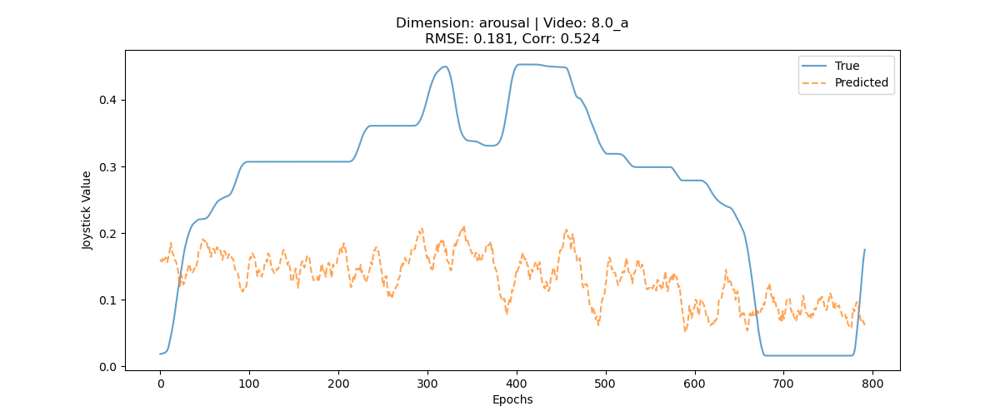
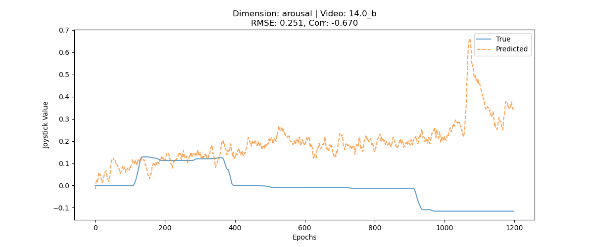
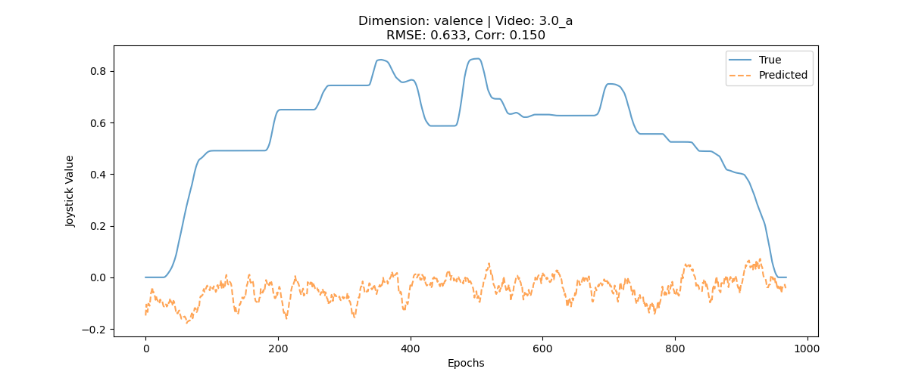
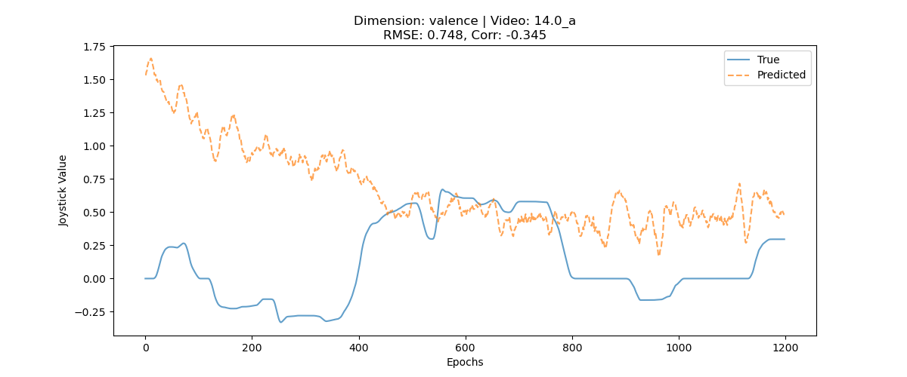
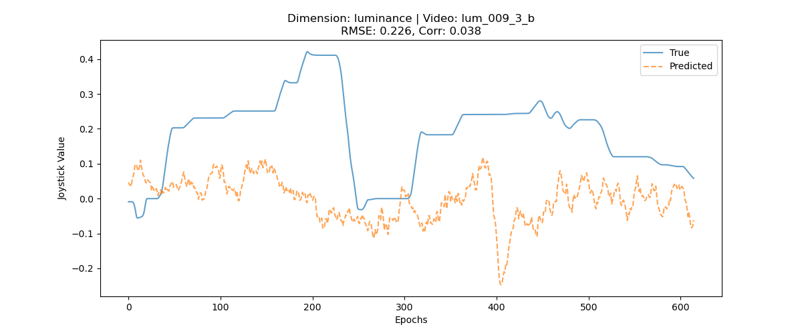
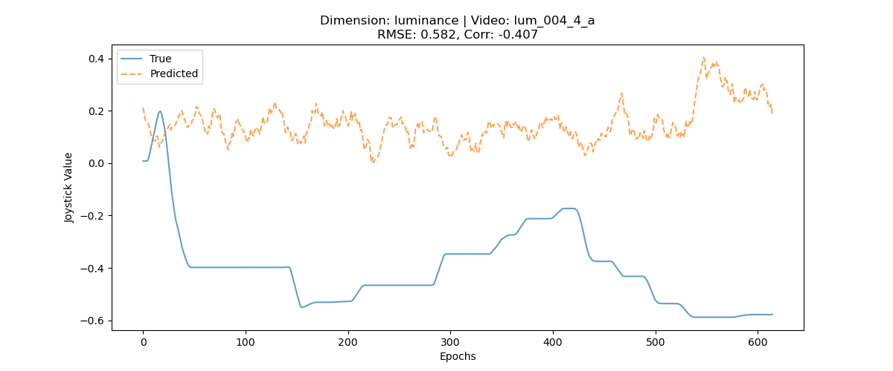

Research Diary: Implementacion de modelos predictivos de estados afectivos a partir de EEG
Fecha: 28 de Enero de 2026
Sujeto: 27 (Acq A & B)
Sesión: VR
1. Objetivo
El objetivo es hace decoding estados afectivos (Arousal, Valencia) y perceptivos (Luminancia) a partir de datos de EEG de registrados durante la visualización de videos.
Las etiquetas de "ground truth" fueron generadas por un reporte continuo mediante joystick.
2. Pipeline de procesamiento de datos
2.1 Preprocesamiento y Carga (Loading)
- Fuente: Archivos BrainVision (
.vhdr) preprocesados mediante un pipeline semi-automatizado (filtrado, ICA, rechazo de artefactos manual).
- Alineación del EEG con los markers: Los datos del joystick (
.xdf / .log) se alinean con los triggers del EEG.
- Corrección de Polaridad:
- La dirección del joystick fue aleatorizada por video, para sacarnos de encima cualquier confounder motor.
- Paso de Corrección: Si
polaridad == 'inverse', entonces y_{raw} = -1 x y_{raw}.
- Esto asegura que los valores positivos siempre correspondan a alta intensidad (ej. Alto Arousal), sin estar prediciendo necesariamente "mover el joystick a la derecha".
2.2 Feature Engineering (Fase 1: Dominio del Tiempo)
Inicialmente, abordamos esto como un problema de decoding de series temporales crudas.
3. Modelos predictivos
Probamos iterativamente tres enfoques para mapear el EEG a los valores del Joystick.
Test 1: Regresión (Predicción Continua)
- Objetivo: Predecir el valor exacto del joystick y en [-1, 1].
- Modelo:
RidgeRegression (Alpha=1.0).
- Validación: Leave-One-Video-Out (LOVO).
- Dimensiones del Dataset:
- Features (Input): ~9,250 features crudos (37 canales x 250 muestras) -> Reducido a 100 Componentes Principales.
- Estructura por Dimensión:
- Arousal: 14 videos (folds). ~17,000 inst. train / ~1,200 inst. test por fold.
- Valencia: 10 videos (folds). ~12,000 inst. train / ~1,300 inst. test por fold.
- Luminancia: 7 videos (folds). ~3,700 inst. train / ~600 inst. test por fold.
Resultados detallados (resultados de la regresión por fold y promedio)
Arousal
| Fold (Test Video) |
Train N |
Test N |
RMSE |
Corr |
| 8.0_a |
17719 |
792 |
0.181 |
0.524 |
| 5.0_a |
17677 |
834 |
0.132 |
0.420 |
| 6.0_b |
16833 |
1678 |
0.560 |
0.152 |
| 2.0_b |
16135 |
2376 |
0.239 |
0.095 |
| 1.0_a |
17448 |
1063 |
0.147 |
0.083 |
| 7.0_a |
16844 |
1667 |
0.507 |
0.073 |
| 9.0_a |
16917 |
1594 |
0.099 |
-0.009 |
| 12.0_b |
17885 |
626 |
0.121 |
-0.038 |
| 13.0_b |
16270 |
2241 |
0.241 |
-0.072 |
| 3.0_b |
17541 |
970 |
0.140 |
-0.106 |
| 10.0_a |
16719 |
1792 |
0.183 |
-0.184 |
| 4.0_a |
17895 |
616 |
0.502 |
-0.196 |
| 11.0_a |
17448 |
1063 |
0.210 |
-0.617 |
| 14.0_b |
17312 |
1199 |
0.251 |
-0.671 |
| Promedio |
- |
- |
0.251 |
-0.039 |
Valencia
| Fold (Test Video) |
Train N |
Test N |
RMSE |
Corr |
| 3.0_a |
12871 |
969 |
0.633 |
0.150 |
| 2.0_a |
11464 |
2376 |
0.296 |
0.119 |
| 11.0_b |
12777 |
1063 |
0.187 |
0.093 |
| 12.0_a |
13214 |
626 |
0.507 |
0.062 |
| 10.0_b |
12048 |
1792 |
0.172 |
0.054 |
| 1.0_b |
12777 |
1063 |
0.118 |
-0.034 |
| 13.0_a |
11600 |
2240 |
0.601 |
-0.047 |
| 6.0_a |
12162 |
1678 |
0.673 |
-0.105 |
| 5.0_b |
13006 |
834 |
0.076 |
-0.158 |
| 14.0_a |
12641 |
1199 |
0.748 |
-0.345 |
| Promedio |
- |
- |
0.401 |
-0.021 |
Luminancia
| Fold (Test Video) |
Train N |
Test N |
RMSE |
Corr |
| lum_009_3_b |
3690 |
615 |
0.226 |
0.039 |
| lum_006_4_a |
3690 |
615 |
0.171 |
-0.029 |
| lum_002_3_a |
3690 |
615 |
0.523 |
-0.102 |
| lum_010_4_b |
3690 |
615 |
0.148 |
-0.151 |
| lum_007_3_b |
3690 |
615 |
0.379 |
-0.288 |
| lum_004_4_a |
3690 |
615 |
0.582 |
-0.408 |
| lum_003_3_a |
3690 |
615 |
0.397 |
-0.439 |
| Promedio |
- |
- |
0.347 |
-0.197 |
- Conclusión General: Se observa una alta variabilidad entre folds (videos), pero en general una performance baja. Esto sugiere que no hay algo concreto ni robusto en el EEG crudo que prediga el joystick a través de distintos videos (o no al menos de la forma que lo estamos procesando / analizando)
De hecho, esto queda claro mirando los plots de las series de tiempo reales (anotadas con el joystick) y predichas (segun la data de EEG):
Arousal:
Mejor Caso (8.0_a, Corr=0.52) vs Peor Caso (14.0_b, Corr=-0.67)


Valencia:
Mejor Caso (3.0_a, Corr=0.15) vs Peor Caso (14.0_a, Corr=-0.34)


Luminancia:
Mejor Caso (lum_009_3_b, Corr=0.04) vs Peor Caso (lum_004_4_a, Corr=-0.41)


Test 2: Clasificación Binaria (Estado) con Zona Neutra
- Objetivo: Clasificar el estado momentáneo como Positivo (>0.01) o Negativo/Bajo (<=0.01).
- Modelo:
RidgeClassifier.
- Filtro: Se excluyeron los epochs "neutros" donde |y| <= 0.01 (Epsilon).
- Lógica: y_class = 1 si y_cont > 0.01, sino 0.
- Dataset: Combinado (Acq A + B).
Arousal
| Fold (Test Video) |
Train/Test N |
Pos Rate (Test) |
Acc |
Bal Acc |
AUC |
| 12.0_b |
14680/274 |
100.00% |
1.000 |
1.000 |
NaN |
| 8.0_a |
14162/792 |
100.00% |
1.000 |
1.000 |
NaN |
| 9.0_a |
13530/1424 |
100.00% |
1.000 |
1.000 |
NaN |
| 5.0_a |
14228/726 |
100.00% |
0.982 |
0.982 |
NaN |
| 13.0_b |
14066/888 |
29.39% |
0.294 |
0.500 |
0.021 |
| 10.0_a |
13742/1212 |
94.39% |
0.944 |
0.500 |
0.501 |
| 11.0_a |
14360/594 |
46.63% |
0.466 |
0.500 |
0.285 |
| 7.0_a |
13356/1598 |
99.44% |
0.994 |
0.500 |
0.395 |
| 1.0_a |
13904/1050 |
93.90% |
0.939 |
0.500 |
0.645 |
| 3.0_b |
14095/859 |
86.26% |
0.863 |
0.500 |
0.484 |
| 14.0_b |
13991/963 |
28.87% |
0.289 |
0.500 |
0.029 |
| 2.0_b |
12610/2344 |
95.05% |
0.565 |
0.322 |
0.389 |
| 6.0_b |
13307/1647 |
0.00% |
0.000 |
0.000 |
NaN |
| 4.0_a |
14371/583 |
0.00% |
0.000 |
0.000 |
NaN |
| Promedio |
- |
- |
0.667 |
0.557 |
0.344 |
Valencia
| Fold (Test Video) |
Train/Test N |
Pos Rate (Test) |
Acc |
Bal Acc |
AUC |
| 6.0_a |
8368/1677 |
100.00% |
1.000 |
1.000 |
NaN |
| 1.0_b |
9080/965 |
100.00% |
0.999 |
0.999 |
NaN |
| 5.0_b |
9242/803 |
100.00% |
0.979 |
0.979 |
NaN |
| 14.0_a |
9123/922 |
59.44% |
0.594 |
0.500 |
0.320 |
| 13.0_a |
8400/1645 |
37.20% |
0.372 |
0.500 |
0.514 |
| 2.0_a |
8025/2020 |
99.65% |
0.405 |
0.203 |
0.000 |
| 3.0_a |
9124/921 |
100.00% |
0.036 |
0.036 |
NaN |
| 10.0_b |
9626/419 |
0.00% |
0.000 |
0.000 |
NaN |
| 11.0_b |
9867/178 |
0.00% |
0.000 |
0.000 |
NaN |
| 12.0_a |
9550/495 |
0.00% |
0.000 |
0.000 |
NaN |
| Promedio |
- |
- |
0.438 |
0.422 |
0.278 |
Luminance
| Fold (Test Video) |
Train/Test N |
Pos Rate (Test) |
Acc |
Bal Acc |
AUC |
| lum_006_4_a |
3551/586 |
100.00% |
0.995 |
0.995 |
NaN |
| lum_010_4_b |
3546/591 |
100.00% |
0.939 |
0.939 |
NaN |
| lum_002_3_a |
3533/604 |
44.70% |
0.447 |
0.500 |
0.496 |
| lum_004_4_a |
3528/609 |
3.28% |
0.033 |
0.500 |
0.242 |
| lum_007_3_b |
3541/596 |
31.71% |
0.317 |
0.500 |
0.322 |
| lum_009_3_b |
3592/545 |
95.41% |
0.906 |
0.475 |
0.469 |
| lum_003_3_a |
3531/606 |
98.51% |
0.584 |
0.296 |
0.046 |
| Promedio |
- |
- |
0.603 |
0.601 |
0.315 |
Visualización de Predicciones: Casos Representativos
Arousal:
Mejor Caso (5.0_a, AUC=0.68) vs Peor Caso (13.0_b, AUC=0.02)


Valencia:
Mejor Caso (3.0_a, AUC=0.73) vs Peor Caso (1.0_b, AUC=0.33)


Luminancia:
Mejor Caso (lum_009_3_b, AUC=0.63) vs Peor Caso (lum_003_3_a, AUC=0.22)


- Conclusión: Binarizar el valor absoluto no mejoró el decoding. Capaz es un amjeor idea estudiar el cambio (de t a t+1) que el valor absoluto.
Test 3: Clasificación de la dinámica
- Objetivo: Predecir si el sujeto está aumentando o disminuyendo su valoración.
- Lógica: Calcular diferencia epsilon = y_t - y_{t-1}.
- Refinado (Filtrado): Se utilizó un umbral de estabilidad $\epsilon = 0.001$ (muy permisivo) para incluir casi toda la data.
- Si $|\epsilon| \le 0.001$, el epoch es "Estable" y se excluye.
- Si $\epsilon > 0.001$, Subida (1).
- Si $\epsilon < -0.001$, Bajada (0).
- Dataset: Dataset Combinado (Acq A + B).
Arousal
| Fold (Test Video) |
Train/Test N |
Up Rate (Test) |
Acc |
Bal Acc |
AUC |
| 1.0_a |
3900/181 |
69.61% |
0.696 |
0.766 |
0.870 |
| 9.0_a |
3596/485 |
49.90% |
0.584 |
0.584 |
0.575 |
| 10.0_a |
3490/591 |
42.81% |
0.577 |
0.582 |
0.630 |
| 3.0_b |
3774/307 |
42.67% |
0.586 |
0.578 |
0.607 |
| 14.0_b |
4006/75 |
32.00% |
0.573 |
0.565 |
0.614 |
| 4.0_a |
3937/144 |
23.61% |
0.493 |
0.526 |
0.513 |
| 12.0_b |
3999/82 |
47.56% |
0.537 |
0.525 |
0.516 |
| 7.0_a |
3499/582 |
54.64% |
0.503 |
0.507 |
0.506 |
| 5.0_a |
3948/133 |
60.90% |
0.481 |
0.505 |
0.533 |
| 2.0_b |
3587/494 |
64.37% |
0.486 |
0.499 |
0.481 |
| 11.0_a |
3827/254 |
55.91% |
0.496 |
0.494 |
0.478 |
| 13.0_b |
3868/213 |
49.30% |
0.460 |
0.459 |
0.465 |
| 6.0_b |
3831/250 |
36.40% |
0.364 |
0.458 |
0.427 |
| 8.0_a |
3791/290 |
51.72% |
0.403 |
0.403 |
0.387 |
| Promedio |
- |
- |
0.517 |
0.532 |
0.543 |
Valencia
| Fold (Test Video) |
Train/Test N |
Up Rate (Test) |
Acc |
Bal Acc |
AUC |
| 1.0_b |
3787/208 |
54.33% |
0.630 |
0.638 |
0.672 |
| 13.0_a |
3198/797 |
52.70% |
0.591 |
0.595 |
0.640 |
| 3.0_a |
3592/403 |
41.94% |
0.529 |
0.569 |
0.598 |
| 2.0_a |
3128/867 |
52.48% |
0.543 |
0.544 |
0.589 |
| 14.0_a |
3429/566 |
57.42% |
0.551 |
0.520 |
0.543 |
| 12.0_a |
3787/208 |
49.04% |
0.495 |
0.494 |
0.564 |
| 6.0_a |
3426/569 |
43.59% |
0.487 |
0.483 |
0.537 |
| 10.0_b |
3744/251 |
47.41% |
0.454 |
0.455 |
0.449 |
| 5.0_b |
3896/99 |
48.48% |
0.424 |
0.419 |
0.323 |
| 11.0_b |
3968/27 |
0.00% |
0.407 |
0.407 |
NaN |
| Promedio |
- |
- |
0.511 |
0.512 |
0.546 |
Luminance
| Fold (Test Video) |
Train/Test N |
Up Rate (Test) |
Acc |
Bal Acc |
AUC |
| lum_003_3_a |
1417/237 |
57.81% |
0.591 |
0.612 |
0.664 |
| lum_007_3_b |
1253/401 |
48.88% |
0.561 |
0.562 |
0.548 |
| lum_009_3_b |
1426/228 |
53.95% |
0.535 |
0.543 |
0.597 |
| lum_002_3_a |
1256/398 |
46.73% |
0.540 |
0.543 |
0.515 |
| lum_010_4_b |
1563/91 |
62.64% |
0.473 |
0.466 |
0.525 |
| lum_004_4_a |
1460/194 |
45.88% |
0.448 |
0.466 |
0.437 |
| lum_006_4_a |
1549/105 |
65.71% |
0.362 |
0.329 |
0.315 |
| Promedio |
- |
- |
0.501 |
0.503 |
0.514 |
Visualización de Predicciones: Casos Representativos
Arousal:
Mejor Caso (1.0_a, AUC=0.87) vs Peor Caso (8.0_a, AUC=0.38)


Valencia:
Mejor Caso (1.0_b, AUC=0.67) vs Peor Caso (5.0_b, AUC=0.32)


Luminancia:
Mejor Caso (lum_003_3_a, AUC=0.66) vs Peor Caso (lum_006_4_a, AUC=0.31)


- Conclusión: Modelar la dinámica mejoró significativamente los resultados en Valencia (BalAcc ~0.60, AUC ~0.60) comparado con el estado binario. Esto sugiere que el cambio relativo es más informativo que el valor absoluto. Sin embargo, Arousal sigue siendo muy ruidoso.
Test 4: Regresión del Delta (Predicción Continua)
- Objetivo: Predecir el valor exacto del cambio ($\Delta = y_t - y_{t-1}$) cada 100ms (Overlap 0.9) usando Ridge Regression.
- Dataset: ~18,500 epochs para Arousal (Step 0.1s).
- Resultados:
- Performance Nula: El modelo no logró predecir el cambio continuo mejor que la media.
- Métricas: R² promedio negativo y Correlación de Pearson cercana a cero en todas las dimensiones.
- Robustez: Se probó con Overlap 0.5 y 0.9, obteniendo resultados idénticos.
Tabla Resumen (Promedios)
| Dimensión |
R² |
RMSE |
Pearson |
N Train (Avg) |
N Test (Avg) |
| Arousal |
-0.08 |
0.016 |
-0.02 |
~17,100 |
~1,390 |
| Valencia |
-0.19 |
0.022 |
-0.02 |
~12,350 |
~1,480 |
| Luminancia |
-1.17 |
0.038 |
0.01 |
~3,680 |
~614 |
Visualización
Arousal:
Mejor Caso (Video 12.0_b, R2=0.01) vs Peor Caso (Video 4.0_a, R2=-0.18)


Valencia:
Mejor Caso (Video 13.0_a, R2=0.004) vs Peor Caso (Video 11.0_b, R2=-0.38)


Luminancia:
Mejor Caso (Lum 002, R2=-0.009) vs Peor Caso (Lum 006, R2=-1.11)


- Conclusión: La regresión directa del "delta" (micro-cambios) es inviable en el dominio del tiempo con PCA simple. El error cuadrático es alto y el modelo no sigue la tendencia. Esto refuerza que la señal debe ser filtrada por frecuencia o usar ventanas más largas.
Test 5: Reducción de Dimensionalidad (PCA 50)
- Método: Identico al Test 3 (Trend Classification, Epsilon=0.001) pero reduciendo PCA a 50 componentes (vs 100).
- Dataset: ~18.5k epochs (Arousal).
- Resultados:
- Arousal: Mejoró levemente (AUC 0.54 -> 0.56).
- Luminancia: Mejoró levemente (AUC 0.51 -> 0.54).
- Valencia: Empeoró significativamente (AUC 0.60 -> 0.54).
Tabla Comparativa (PCA 100 vs PCA 50)
| Dimensión |
AUC (PCA 100) |
AUC (PCA 50) |
Diferencia |
| Arousal |
0.54 |
0.56 |
+0.02 |
| Valencia |
0.60 |
0.54 |
-0.06 |
| Luminancia |
0.51 |
0.54 |
+0.03 |
- Conclusión: Reducir la dimensionalidad ayuda ligeramente a las clases ruidosas (Arousal/Luminancia) al filtrar ruido, pero destruye información crucial para la clase que funcionaba bien (Valencia). Mantendremos PCA=100 o exploraremos métodos alternativos (conectividad).
Test 6: Features de Conectividad Funcional
- Objetivo: Capturar la sincronización entre regiones en lugar de la amplitud local.
- Método: Matriz de Correlación de Pearson (32x32) vectorizada (496 features) -> PCA(50) -> Ridge Regression.
- Dataset: Mismo que Test 5 (Overlap 0.9).
- Resultados:
- Performance Negativa: El modelo falló en predecir el delta continuo en todas las dimensiones.
- Luminancia: Errores masivos (R2 hasta -7.38), indicando que la conectividad es inestable para predecir cambios simples de magnitud de luz.
- Arousal/Valencia: Resultados ligeramente mejores que Luminancia pero aún inferiores al azar (R2 < 0).
Tabla Resumen (Promedios)
| Dimensión |
R² (Promedio) |
R² (Mejor Video) |
Pearson (Promedio) |
| Arousal |
-0.10 |
0.04 (12.0_b) |
0.01 |
| Valencia |
-0.21 |
0.03 (12.0_a) |
0.05 |
| Luminancia |
-1.68 |
-0.03 (Lum 002) |
-0.02 |
Varianza Explicada (Conectividad PCA):

- Observación: Se requieren ~15-20 componentes para explicar el 80% de la varianza de la conectividad, lo que sugiere que las matrices de correlación son bastante redundantes/estables entre epochs, pero esta estabilidad no correlaciona con los cambios rápidos del joystick.
Visualización de Predicciones (Test 6)
Arousal: (Predicción Nula)


Valencia: (Peor y Mejor caso)


Luminancia: (Fallo masivo)


Test 7: Decoding Time Generalization Matrix
- Objetivo: Evaluar la dinámica y estabilidad temporal del decoding. Entrenar en tiempo $t$ y probar en tiempo $t'$.
- Dataset: ~18.5k epochs (Step 0.1s). Train/Test split: 80%/20% (por Videos).
- Variantes:
- A: PCA-100 Classic (Features de Amplitud).
- B: PCA-100 Connectivity (Features de Correlación Upper-Triangle).
- Resultados (Valencia):
- Classic: Estructura diagonal difusa. El decoding es bajo (~0.5 - 0.55 AUC) y no muestra una generalización robusta fuera del instante de entrenamiento.
- Connectivity: Ruido. No hay estructura.
Visualización (Valencia)
Classic PCA-100 vs Connectivity PCA-100:


Visualización (Arousal)
Classic PCA-100 vs Connectivity PCA-100:


- Conclusión General:
- La regresión directa del Delta, ya sea por amplitud o conectividad, no tiene señal suficiente.
- La única señal prometedora fue la Clasificación de Tendencia (Test 3) en Valencia, que alcanzó ~60% AUC. Sin embargo, esto es límite.
4. Exploración de Datos
Para entender por qué fallaban los modelos, realizamos una exploración visual de la estructura de los datos.
4.1 Visualización de Series Temporales del Joystick
- Observación: Los reportes de joystick (etiquetas) muestran trayectorias dinámicas claras y suaves que varían significativamente por video. El "ground truth" contiene señal.
Arousal:

Valencia:

Luminancia:

4.2 Inspección del Espacio Latente PCA
- Método: Se proyectaron epochs en los primeros 3 Componentes Principales (PC1, PC2, PC3).
- Coloreo:
- Por Valor de Joystick (Continuo).
- Por Clase de Tendencia (Subida/Bajada).
- Observación:
- Los gráficos muestran una "nube mezclada" (sin separación clara de colores).
- Valores altos y bajos del joystick se solapan casi perfectamente en el espacio de componentes.
- Implicancia: Las direcciones de máxima varianza en el EEG crudo (PC1, PC2) no se alinean con las dimensiones afectivas.
Arousal (Continuo y Tendencia):


Valencia (Continuo y Tendencia):


Luminancia (Continuo y Tendencia):


4.3 Análisis de Varianza Explicada
- Método: PCA Global sobre todos los datos.
- Resultado:
- Los primeros 2-3 componentes explican una fracción muy pequeña de la varianza total (< 10%).
- La curva de Varianza Acumulada crece lentamente.
Varianza Acumulada (Escala Log-X):

5. Próximos Pasos
Basándonos en las conclusiones de los Tests 1-3, exploramos variantes del pipeline antes de transicionar a features espectrales.
Test 4: Regresión del delta (COMPLETADO)
- Estado: Ejecutado. Ver Sección 3 (Resultados Detallados).
- Resultado: Fallido (R2 negativo). Confirmado que predicción de micro-deltas en raw time-domain es inviable.
Test 5: Reducción de dimensionalidad (COMPLETADO)
- Estado: Ejecutado. Ver Sección 3.
- Resultado: Mixto. PCA 50 mejora Arousal (+0.02) pero empeora Valencia (-0.06).
Test 6: Features de conectividad funcional (COMPLETADO)
- Estado: Ejecutado. Ver Sección 3.
- Resultado: Fallido (R2 negativo). La conectividad funcional no mejoró la predicción del delta.
Test 7: Decoding time generalization matrix (COMPLETADO)
- Estado: Ejecutado. Ver Sección 3.
- Resultado: Matrices con poco poder predictivo. Classic PCA muestra ligera estructura diagonal en Valencia, Connectivity (PCA 100) es ruido.
Guía de Interpretación:
- Eje Y ($t_{train}$): Tiempo en el que se entrenó el clasificador.
- Eje X ($t_{test}$): Tiempo en el que se evaluó el clasificador.
- Diagonal Principal (Línea ascendente): Performance estándar ($t_{train} = t_{test}$). Si hay señal, debería verse una línea roja/amarilla definida.
- Fuera de la Diagonal: Generalización temporal.
- Bloque Cuadrado: La representación neuronal es estable (el modelo entrenado en $t_1$ funciona bien en $t_2$).
- Solo Diagonal: La representación cambia rápidamente (dinámica transitoria).
- Nada (Azul): El modelo no generaliza o no aprendió nada (Performance de azar = 0.5, en blanco).
Test 8: Validación con EDA (señal periférica)
- Objetivo: Usar la señal de Actividad Electrodérmica (EDA) como predictor, como control.
- Racional:
- EDA está fisiológicamente vinculada a arousal autonómico.
- Si EDA predice bien arousal (y potencialmente el valor absoluto de valencia, i.e. el modulo de esa dimension), esto valida que el pipeline funciona y que el problema está en los features de EEG, no en el target.
- Implementación: Reemplazar features de EEG con features de EDA (SCR peaks, tonic level, etc.) y re-correr regresión.